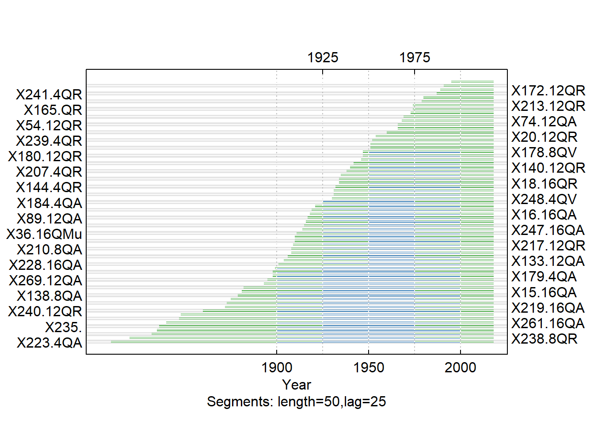
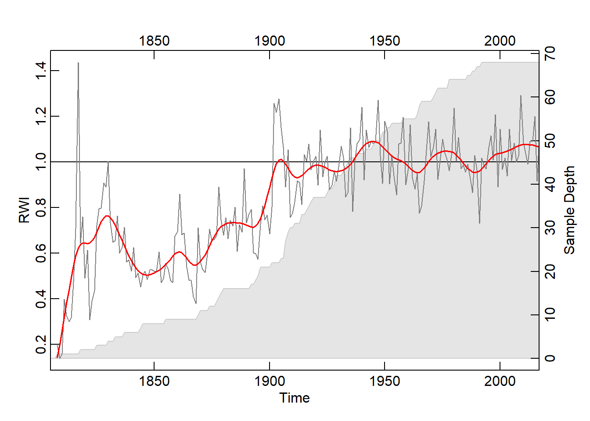

Building, Crossdating, and Analyzing a Tree Ring Chronology from New York’s Genesee Valley
Greg Bream
Introduction
The Genesee Valley of western New York is known for its historic oak trees. Building a mean-value chronology of trees cored in this area will allow me to infer the general environmental conditions at a given time. Crossdating will allow me to be more confident in the dates assigned and yield accuracy to the values in the chronology. Droughts, for example can be inferred from years with consistently narrow rings within the chronology. This can be explored further by crossdating with the Palmer drought severity index. Identifying growth releases of the cored trees will allow me to identify canopy disturbance events using time periods with consistently high values.
Materials and methods
Narrative and most code will go here. Describe what you are doing and show how to do it (with code).
Materials:
- Personally collected tree ring-width data of oak trees in the form of CSV and compact files
Study Area
Tree cores were collected from various species of Oaks from Irondequoit, NY near the shore of Lake Ontario southward through the Genesee Valley to Dalton, NY. These areas experience relatively different patterns of precipitation annually. Some cored trees were located in close proximity to bodies of water, while others in inherantly drier environments. The specific environment each tree grew in likely had an impact on growth trends specific to each, as well as resistance to drought and other disturbance events. For instance, some of the trees located more to the south lie at the eastern edge of Lake Erie’s snowbelt and thus experience a greater amount of winter precipitation. Other trees, meanwhile at the northern edge of the study area experience frequent snowfall enhancement from Lake Ontario during synoptic events.
Plotting the Tree-Ring Series
library(dplR)
QuercusMaster <- read.rwl("https://raw.githubusercontent.com/geo511-2019/2019-geo511-project-gbream/master/data/QuercusMaster.csv")## Attempting to automatically detect format.
## Detected a csv file.plot(QuercusMaster, plot.type = "spag")Correlation with Master
The correlation of each series with the master is calculated using interseries.cor() and the results are in the table below. Values of .32 or higher indicate a significant correlation and are in green. The field of dendrochronology is unique in the sciences in that series that don’t crossdate well with others should be excluded in order to more accurately assess growth response to environmental or climatic conditions (Carrer, 2011). In my study, I removed 18 series that fell below the significance threshold of 0.32 before detrending and checking for crossdating errors with corr.rwl.seg().
Interseries_Cor <- interseries.cor(QuercusMaster, prewhiten=TRUE,
method="spearman")
#Changing column names
names(Interseries_Cor)[1]<-"Correlation"
names(Interseries_Cor)[2]<-"P-value"
library(kableExtra)
library(magick)
kable(Interseries_Cor, digits = c(2, 4)) %>%
kable_styling(bootstrap_options = "striped", full_width = T, position = "left", font_size = 13, fixed_thead = T) %>%
row_spec(which(Interseries_Cor$Correlation >= .32), bold = T, color = "green", background = NULL) %>%
scroll_box(width = "700px", height = "300px")| Correlation | P-value | |
|---|---|---|
| X15.16QA | 0.52 | 0.0000 |
| X16.16QA | 0.34 | 0.0003 |
| X35.4QA | 0.48 | 0.0000 |
| X37.4QA | 0.38 | 0.0000 |
| X38.8aQA | 0.48 | 0.0000 |
| X39.8QA | 0.58 | 0.0000 |
| X40.16QA | 0.40 | 0.0000 |
| X74.12QA | 0.47 | 0.0003 |
| X88.12QA | 0.58 | 0.0000 |
| X89.12QA | 0.55 | 0.0000 |
| X95.8QA | 0.50 | 0.0000 |
| X117.8QA | 0.27 | 0.0001 |
| X133.12QA | 0.49 | 0.0000 |
| X138.8QA | 0.39 | 0.0000 |
| X179.4QA | 0.50 | 0.0000 |
| X184.4QA | 0.50 | 0.0000 |
| X202.16QA | 0.27 | 0.0020 |
| X206.12QA | 0.30 | 0.0000 |
| X210.8QA | 0.61 | 0.0000 |
| X215.8QA | 0.39 | 0.0000 |
| X219.16QA | 0.51 | 0.0000 |
| X223.4QA | 0.32 | 0.0000 |
| X228.16QA | 0.52 | 0.0000 |
| X233.12QA | 0.27 | 0.0004 |
| X247.16QA | 0.57 | 0.0000 |
| X261.16QA | 0.54 | 0.0000 |
| X269.12QA | 0.58 | 0.0000 |
| X278.16QA | 0.53 | 0.0000 |
| X18.16QR | 0.52 | 0.0000 |
| X20.12QR | 0.50 | 0.0000 |
| X21.8QR | 0.34 | 0.0002 |
| X44.8QR | 0.44 | 0.0000 |
| X54.12QR | 0.59 | 0.0000 |
| X63.8QR | 0.41 | 0.0057 |
| X94.16QR | 0.53 | 0.0001 |
| X96.8QR | 0.56 | 0.0000 |
| X109.15QR | 0.42 | 0.0245 |
| X129.16QR | 0.31 | 0.0001 |
| X132.12QR | 0.55 | 0.0000 |
| X134.8QR | 0.34 | 0.0050 |
| X135.4QR | 0.20 | 0.0058 |
| X140.12QR | 0.36 | 0.0006 |
| X144.4QR | 0.39 | 0.0001 |
| X154.16QR | 0.44 | 0.0001 |
| X165.QR | 0.47 | 0.0007 |
| X172.12QR | 0.62 | 0.0002 |
| X180.12QR | 0.58 | 0.0000 |
| X181.8QR | 0.39 | 0.0000 |
| X182.12QR | -0.28 | 0.9293 |
| X183.8QR | 0.16 | 0.1274 |
| X187.12QR | 0.54 | 0.0000 |
| X194.12QR | 0.49 | 0.0000 |
| X205.8QR | 0.29 | 0.0006 |
| X207.4QR | 0.48 | 0.0000 |
| X213.12QR | 0.59 | 0.0000 |
| X217.12QR | 0.48 | 0.0000 |
| X227.11QR | 0.27 | 0.0885 |
| X229.4QR | 0.48 | 0.0000 |
| X236.12QR | 0.34 | 0.0175 |
| X237.8QR | 0.32 | 0.0000 |
| X238.8QR | 0.49 | 0.0000 |
| X239.4QR | 0.45 | 0.0001 |
| X240.12QR | 0.33 | 0.0000 |
| X241.4QR | 0.61 | 0.0002 |
| X245.8QR | 0.62 | 0.0000 |
| X273.8QR | 0.62 | 0.0000 |
| X276.4QR | 0.25 | 0.0099 |
| X277.12QR | 0.54 | 0.0000 |
| X46.8QV | 0.34 | 0.0000 |
| X53.16QV | 0.58 | 0.0000 |
| X62.8QV | 0.42 | 0.0050 |
| X65.8QV | 0.33 | 0.0033 |
| X178.8QV | 0.43 | 0.0001 |
| X230.16QV | 0.29 | 0.0001 |
| X248.4QV | 0.48 | 0.0000 |
| X274.8QV | 0.54 | 0.0000 |
| X125.12QP | 0.44 | 0.0000 |
| X22.12QM | 0.27 | 0.0006 |
| X23.8QM | 0.16 | 0.0294 |
| X79.8QM | 0.28 | 0.0017 |
| X36.16QMu | 0.48 | 0.0000 |
| X77. | 0.45 | 0.0000 |
| X92. | 0.16 | 0.0419 |
| X118. | 0.27 | 0.0013 |
| X224. | 0.03 | 0.3299 |
| X235. | 0.39 | 0.0000 |
Crossdating
Crossdating is of absolute importance in dendrochronology. It involves identifying similar patterns in radial growth between multiple trees and applying those patterns to trees of unknown dates in order to ascertain the correct tree age. It also assures that only trees with similar responses to the environment are included in a chronology. In the case of my cores, I am already able to accurately assign dates, since the trees were living at the time of coring and I have the dates of measurement. In R, crossdating is done with corr.rwl.seg. The argument seg.length specifies the length of the segments to crossdate. I chose the segment length to be 50 years, which is likely the longest segment that I should use, since the average series length is approximately 100 years. By default, the overlap for the segments is half of the segment length, 25 years. The pcrit argument specifies the critical value for the correlation. The blue segments on the plot below represent a significant correlation and thus crossdating success for that segment, while the red represent low correlations and potential crossdating issues.
QuercusMaster_exclude <- subset(QuercusMaster, select= -c(X182.12QR, X224., X92., X23.8QM, X183.8QR, X135.4QR, X117.8QA, X233.12QA, X276.4QR, X202.16QA, X118., X62.8QV, X230.16QV, X129.16QR, X205.8QR, X79.8QM, X206.12QA, X22.12QM, X118.))
Cross_SEGS <- corr.rwl.seg(QuercusMaster_exclude, seg.length = 50, pcrit = 0.10)
Detrending the Series
In dendrochronology, detrending is the fitting of a curve to the ring-width data and removing patterns unique to each tree. This includes the effects of tree age, disturbance events, and other growth trends due to site-specific drivers of change. I chose to use a conservative approach to detrending the series in order to remove low-frequency long-term growth trends, but to maintain the higher frequency short-term trends such as those influenced by the climate. To do this, I used the function detrend(). The method argument specifies the detrending method, which in this case is fitting a negative exponential curve to the series. Choosing not to detrend is also an option, which involves just taking the mean width of all trees in a chronology. As a note, other methods of detrending do exist and are implemented based on the specific research goals.
QuercusMaster.rwi <- detrend(rwl = QuercusMaster_exclude, method = "ModNegExp")Mean Value Chronology
Building a Mean Value Chronology out of the .rwi object created above using chron(). By default, chron() uses Tukey’s biweight robust mean, which is unaffected by outliers and thus is a more accurate representation of the data. The plot below plots the newly created mean chronology. The second and third arguments of plot(), add.spline and nyrs add a smoothing spline with a wavelength (period) of 20 years. To add clarification, the rwi, or ring-width index involves dividing each of the ring-width series by the growth trend and represents standardization of the chronology (Bunn, 2008).
QuercusMaster.crn <- chron(QuercusMaster.rwi, prefix = "CRN")
plot(QuercusMaster.crn, add.spline=TRUE, nyrs=20)
PDSI Correlation
A comparison of the mean value chronology and the Palmer Drought Severity Index (PDSI) for June/July/August shows a probable correlation. The PDSI represents moisture availability in an area and is a conglomerate of temperature, precipitation, and soil properties (Sheppard, 2010). In many cases, annual variance in ring width can be explained by moisture conditions. I’ve highlighted 4 of the indicator years (years with consistently wide or narrow ring widths) in the chronology in the first graph below. The very narrow annual growth in these years consistent across the 68 included series can be explained by drought conditions in the same or previous year of growth. In the second graph, the RWI chronology is plotted against PDSI. The resulting R-squared value is 0.63 indicating a moderately strong positive correlation.
PDSI <- read.csv("https://raw.githubusercontent.com/geo511-2019/2019-geo511-project-gbream/master/data/PDSI_Vals.csv")
Cook_PDSI <- read.csv("CookPDSI2.csv")
QChron <- read.csv("https://raw.githubusercontent.com/geo511-2019/2019-geo511-project-gbream/master/data/QChron3.csv")
library(ggplot2)
Chron_vs_PDSI <-
ggplot() +
geom_line(data = QChron, aes(x = Year, y = Value, color = "RWI")) +
geom_line(data = PDSI, aes(x = Year, y = Value/8, color = "PDSI_Met")) +
geom_line(data = Cook_PDSI, aes(x = Year, y = Value/8, color = "PDSI_Cook")) +
geom_vline(xintercept=1965, linetype = "dotted")+
geom_vline(xintercept=1909, linetype = "dotted")+
geom_vline(xintercept=1936, linetype = "dotted")+
geom_vline(xintercept=1991, linetype = "dotted")+
geom_vline(xintercept=1895, linetype = "dotted")+
geom_vline(xintercept=1868, linetype = "dotted")+
geom_text(aes(x=1895, label="1895", y = 0.4), angle = 90) +
geom_text(aes(x=1868, label="1868", y = 0.23), angle = 90) +
geom_text(aes(x=1909, label="1909", y = 0.4), angle = 90) +
geom_text(aes(x=1965, label="1965", y = 0.5), angle = 90) +
geom_text(aes(x=1936, label="1936", y = 0.5), angle = 90) +
geom_text(aes(x=1991, label="1991", y = 0.5), angle = 90) +
scale_y_continuous(sec.axis = sec_axis(~.*8, name = "PDSI Values")) +
ggtitle("Mean RWI Chronology & PDSI Values (Cook & Met)")+
ylab("RWI Values")+
scale_colour_manual(name="Legend",
values=c(RWI="red", PDSI_Met="blue", PDSI_Cook="dark blue"))
Chron_vs_PDSI
library(ggpubr)
PDSI_RWI <- read.csv("PDSI_RWI.csv")
PDSICHRON <-
ggscatter(PDSI_RWI, x = "PDSI", y = "RWI", add = "reg.line", cor.coef = TRUE, title = "RWI vs. PDSI 1895-2015")
PDSICHRONGrowth Releases
Growth releases are periods in a trees growth where ring-width is at least 25% greater than mean of both the preceding and subsequent 10 year period, and lasting several years (Nowacki & Abrams, 1997). A change of 50% signifies a major release. A growth release means that some type of disturbance event occurred near the tree. This includes death of nearby trees due to natural or human-driven causes. The function below, growthAveragingALL(), calculates growth releases in each series and produces graphs for each of the series in the chronology. One thing that stands out to me is that multiple trees experienced growth releases at 1991. Through taking measurements, 1991 was deemed what is called an indicator year. That is, a year that is consistently narrow across the majority of the tree cores. Through crossdating with the Palmer drought severity index (PDSI), this lack of growth was likely due to drought. What I find interesting about this is that three of the series, x133-12QA, x165-QR, and x187-12QR experienced significantly increased growth during this time. It is likely that these trees were smaller and in the understory, and death of a larger tree or trees in the canopy lead to in increase in available light and consequently, an increase in growth rate.
library(TRADER)
library(jpeg)
Quercus_nopartials <- read.rwl("https://raw.githubusercontent.com/geo511-2019/2019-geo511-project-gbream/master/data/Quercus_Nopartials.csv")## Attempting to automatically detect format.
## Detected a csv file.#Radial Growth Averaging for Quercus (all)
growthAveragingALL(Quercus_nopartials, releases = NULL, m1 = 10, m2 = 10, buffer = 10, prefix = "ga", drawing = TRUE, criteria = 0.25, criteria2 = 0.5, gfun = mean, length = 5, storedev = jpeg)## [1] "## Nowacki & Abrams analysis!"
## [1] "Criteria 0.25 Criteria2 0.5 m1 10 m2 10 Buffer 10 Length 5"
## [1] "Total number of releases >= 0.25 & < 0.5 is 43"
## inyears
## 1824 1841 1842 1859 1863 1875 1882 1894 1901 1924 1927 1928 1930 1934 1936
## 1 1 1 1 1 1 1 1 1 1 1 1 2 1 1
## 1937 1938 1945 1948 1949 1957 1960 1967 1968 1973 1979 1985 1990 1991 1996
## 2 1 1 1 1 2 1 1 2 1 3 1 1 3 1
## 1997 1999 2001 2003
## 1 1 2 1
## [1] "Total number of releases >= 0.5 is 45"
## inyears
## 1830 1860 1868 1872 1875 1879 1896 1901 1903 1905 1912 1914 1916 1918 1922
## 1 1 1 1 1 1 1 1 2 1 1 1 1 1 2
## 1925 1930 1931 1934 1936 1942 1945 1955 1957 1958 1961 1964 1965 1967 1968
## 1 1 1 1 1 1 1 1 1 2 1 1 1 1 1
## 1969 1970 1974 1979 1990 1991 1994 2004 2005
## 1 1 1 2 1 1 3 1 1#Prefix "ga" just means that it's the growth average(ga). If this was for the absoluteIncreaseALL() function, I would put the prefix as "ai" for absolute increase.
# Define variable containing url
GA_165 <- "https://raw.githubusercontent.com/geo511-2019/2019-geo511-project-gbream/master/data/ga_165-QR.jpeg"
GA_133 <- "https://raw.githubusercontent.com/geo511-2019/2019-geo511-project-gbream/master/data/ga_X133.12QA.jpeg"
GA_187 <- "https://raw.githubusercontent.com/geo511-2019/2019-geo511-project-gbream/master/data/ga_X187.12QR.jpeg"


Conclusions
In all, 68 of the 86 trees exhibited similar growth responses to environmental conditions with summer moisture availability a primary driver of change. Further, growth releases
References
Bunn AG. (2008). A dendrochronology program library in R (dplR). Dendrochronologia, 26, 115–124.
Carrer, M. (2011). Individualistic and time-Varying tree-ring growth to climate sensitivity. PloS one, 6(7), e22813. doi: 10.1371/journal.pone.0022813
Nowacki GJ & Abrams, MD. (2008). Radial-growth averaging criteria for reconstructing disturbance histories from presettlement-origin oaks. Ecological Monographs, 67.
Sheppard, PR. (2010). Dendroclimatology: extracting climate from trees. WIREs Climate Change, 1(3), 343-352. https://doi.org/10.1002/wcc.42
Sullivan PF, Pattison, RR, Brownlee, AH, Cahoon SMP, & Hollingsworth, TN. (2016). Effect of tree-ring detrending method on apparent growth trends of black and white spruce in interior Alaska. Environmental Research Letters, 11 (11).